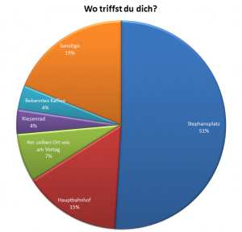
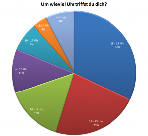

Bergen, am 13. November 2010
Liebes Tagebuch,
hinter Stephans oberflächlicher, harter Schale voller verschlagener Brutalität und Menschenverachtung steckt eine noch viel härterer Kern, bis zum Brechen gefüllt mit verschlagener Brutalität und Menschenverachtung. Nicht nur, dass er mir sämtliche Kreditkarten und Reiseschecks sowie den Notfall-Fünfziger von Oma abgenommen hat, auch die Nächte im gemeinsamen Hotelzimmer sind alles andere als Urlaub für mich.
Er hat nämlich die Angst, dass ihm Mordkommandos des amerikanischen Geheimdienstes auf den Fersen sind – durchaus berechtigt, immerhin ist er noch vor Robert Fisher, Alexis Flores und Osama Bin Laden auf der Most-Wanted-Liste des FBI. Daher muss ich wie ein Wachhund zusammengerollt vor der Hotelzimmertüre schlafen, damit Stephan rechtzeitig gewarnt wird: „Außerdem muss ich so deine Drecksfresse nicht ertragen“, pflegte er grinsend hinzufügen.
Auch tagsüber schikaniert er mich. Ich darf in seiner Anwesenheit weder den Blick heben noch sprechen, denn, wie er gleich bei der Ankunft in Bergen unmissverständlich klar stellte: „Wenn der Kuchen spricht, hat der Krümel Pause.“
Monat: November 2010
Die Norwegen-Tagebücher (2)
Bergen, am 12. November 2010
Liebes Tagebuch,
Norwegen ist kein schönes Land. Es ist dunkel hier, saukalt und die Menschen sind abweisend. Zweiteres mag vielleicht daran liegen, dass mir meine Reisebegleitung Stephan sämtliche auch nur entfernt wärmende Kleidung für den Eigengebrauch abgenommen hatte. Dritteres, dass er sofort nach der Landung in Bergen damit begonnen hatte, jeden Einheimischen umgehend als „elendigen Drecksbolschewisten“ zu bezeichnen. Offenbar hat Stephan, der im Übrigen bekennender Nationalsozialist der ersten Stunde ist, den Norwegern nie verziehen, dass die deutsche U-Boot-Basis aus dem Zweiten Weltkrieg doch an die Alliierten gefallen ist.
Überhaupt habe ich mir Norwegen anders vorgestellt, hätte aber vielleicht Stephans Schilderungen von kilometerlangen weißen Sandstränden, sanfter Dünung, Palmen und willigen Hula-Mädchen nicht uneingeschränkt Glauben schenken sollen. Es ist also auch meine Schuld, dass ich hauptsächlich Badehosen und -schlapfen im Gepäck habe, was sich bei Temperaturen um den Gefrierpunkt und einem schlagenden, brutalen Reisegefährten schnell als nur bedingt optimal herausstellte …
Die Norwegen-Tagebücher (1)
Linz, am 11. November 2010
Liebes Tagebuch,
heute Morgen war es soweit – gemeinsam mit Stephan ging ich auf große Reise nach Norwegen, genauer gesagt in jene Stadt, die ausschließlich durch ihren Nazi-U-Boot-Bunker bekannt ist. Monatelang hatte ich auf diesen letzten Urlaub des Jahres hingefiebert. Zu früh gefreut, denn meine Reisebegleitung ist … nun … schwieriger als gedacht.
Abgesehen dass Stephan prinzipiell ohne Gepäck reist („Ich komm schon zurecht“) und mir sofort und Androhung von Faustschlägen ins Gesicht und/oder den Magen meine Jacke sowie meine Zahnbürste abnahm, gestaltete sich auch die Ausreise aus Österreich unerwartet schwierig. Stephan schien nämlich vergessen zu haben, dass er in 162 Ländern wegen Verbrechen gegen die Menschlichkeit gesucht wird, was bei der Passkontrolle zu Komplikationen führte. Auch seine kreuzfidelen Versuche, die Lage zu entspannen, indem er wiederholt der zuständigen Dame an den Hintern fasste, halfen nur bedingt. Schließlich entsann er sich aber seiner üblichen diplomatischen Kniffe (Androhung von Faustschlägen ins Gesicht und/oder den Magen) und wir konnten das Flugzeug besteigen.
Während des Flugs Richtung Frankfurt, der nicht einmal eine Stunde dauerte, betrank sich Stephan derart, dass er mehrmals versuchte, das Flugzeug zu verlassen, weil er, wie man seinem Brüllen entnehmen konnte, „den Scheißbuschauffeur nicht mehr aushält“. Das hinderte ihn aber nicht daran, nebenbei die beiden armen Stewardessen zu vergenusszwergeln; dass eine der Stewardessen ein Steward war, schien ihm in der Hitze des Gefechts entgangen zu sein.
Auch der Umstieg in Frankfurt war nicht so einfach, da zwei Piloten unabhängig voneinander den Start verweigerten, solange Stephan an Bord war. Nur meine Beteuerungen, dass er sowieso gleich seinen Rausch ausschlafen müsse, brachten uns schließlich in den hohen Norden …
Happy Birthday, Blog (29)
Freundschaft liebe Genossen!
I nimm‘ an, dass bekannt is, dass i wiedergewählt wurde. Und zwar ned als irgendwos, sondern als Steiermann von der Landeshauptmark. Und damit Sie ned glauben, ich wär’ jetzt ein Weichei, des war ich nie in meinem Leben, schließlich bin i da Bua von einem freilaufenden Huhn, sag ich ihnen jetzt ein für alle mal: Jo, ich gehöre auch zu den Lesern von Saxxen’s Blog. Und i wär ned da Voves, wenn i jetzt ned schreiben tät, SO derf über mich überhaupt niemand schreiben, ned einmal der Saxx, der im November glücklicherweise ins La Bohème kommt. Verstengans, des akzeptier i ned, diesen Stil.
(das Telefon klingelt)
Der Herr Blogschreiber möchte mich sprechen, aber i fürcht, des is a bissl spät jetzt.
{kind=link}
Ein Experiment: Die Auswertung
Vor zwei Wochen habe ich eine kleine Umfrage gestartet, deren Ziel es war, empirisch festzustellen, wie gleichgeschaltet Menschen sind; oder, weniger reißerisch, wie einheitlich sie denken.
Die Fragestellung war, wo man auf ein(e) Gegenüber warten würde, wenn zwar ein Treffen vereinbart ist, aber kein genauer Ort und keine genaue Zeit. Einzig der Tag und die Stadt, im konkreten Beispiel Wien, stand fest.
53 Personen haben ihre Antworten abgegeben. Bereinigt man die um jene, die entweder besonders witzig sein wollten und die, die es auf keinem Aug‘ kneißten, ergibt das, Trommelwirbel, folgende Verteilung:
Wer mag, kann auch die vollständige, unbereinigte Liste aller Antworten herunterladen.
Ich habe absichtlich Wien als Stadt vorgegeben, weil es dort vor bekannten Orten nur so wimmelt und sich auch Nicht-Wiener halbwegs zurechtfinden, die Auswahl an möglichen Orten aber groß genug ist (im Gegensatz zu Linz oder Bimberg). Dass das ultimative Wiener Wahrzeichen, der Stephansdom, der mit Abstand meistgenannte Treffpunkt ist, dürfte kaum verwundern – mich zumindest nicht, denn ich hätte auch so geantwortet.
Interessanter war da schon die genaue Uhrzeit, vor allem im Hinblick auf die Fragestellung. Schließlich war dort von einem Rendezvous die Rede und gemeinhin finden die doch eher am Abend statt. Trotzdem würde eine große Zahl eher Mittags oder Nachmittags warten. Offenbar befindet sich unter den Antwortern und Antworterinnen besonders viel arbeitsscheues Studentenvolk, das auch tagsüber genug Freizeit erübrigen kann.
Fazit: Nimmt man ein bisschen Wartezeit in Kauf (und wer tut das nicht gerne für eine vielversprechende Bekanntschaft) würde zumindest bei jedem zweiten das Date klappen. Interessant, jetzt im Nachhinein, wäre noch gewesen, inwiefern sich die Antworten von Wienern und Nicht-Wienern, besonders im Hinblick auf den Ort, unterscheiden; ich argwöhne ja, dass es die überforderten Provinzler ausnahmslos Richtung Stephansdom zieht, während sich die Einheimischen dem dortigen Gewusel eher entziehen wollen.
Danke im Übrigen an alle Teilnehmer. Ich hoffe, es wurde nicht nur meine, sondern auch eure Neugier befriedigt.
Happy Birthday, Blog (28)
Servus, servus, servus, auch die Zuschauer aus Österreich, der Schweiz, Liechtenstein, Südtirol und Luxemburg, aus der Stadthalle in Wuppertal zu Wetten Dass!
Mein nächster Gast, er ist so etwas wie der Elvis der Gegenwartsautoren oder der Rembrandt des Avant-Garde-Theaters. Manche gehen sogar soweit, dass sie ihn als Weltliteraten vom Formate eines Muhamed Alis bezeichnen. Er hat mehr Buchausgaben seines Blogs verkauft als Ludwig Scharinger Sparbücher, in punkto Schönheit überstrahlt er mühelos Alfred Hitchcock, intelligenzmäßig steckt er Arnold Schwarzenegger und Andreas Goldberger gleichermaßen in die Tasche und sein Stern in Hollywood leuchtet heller als der von Alfred Gusenbauer. Seit sieben Jahren im Geschäft mussten wir nunmehr fünf Jahre auf sein neues Album warten. Meine Damen und Herren, heute Weltpremiere bei Wetten Dass – hier ist Saxx mit seinem neuen Hit „Random Insights“.
Happy Birthday, Blog (27)
auch von mir und meiner lieben EHE(!)frau Fiona Pacifico Griffini-Grasser, geboren im Winter als Fiona Winter, alles erdenklich Gute für dich und dein Blog!
Sieben Jahre ist eine lange Zeit, genauso lange, wie ich als Finanzminister durchhalten konnte. Mancher Scherzbold meint sogar, dass sieben Jahre gar nicht lange sind wenn man bedenkt, wie viel man als seriöser österreichischer Kaffeebankier von der österreichischen, revanchistischen Justiz ausfassen kann. Brrr.
Deshalb habe ich mir schon vorsorglich eine elektronische Fußfessel bei Conrad Electronics bestellt, damit ich – im Falle des Falles, man weiß ja nie – nicht so lange darauf warten muss wie mein Freund Helmut Marcel Elsner, wenn ich sie demnächst mal brauchen sollte. Frei in Anlehnung an den legendären Jogi Kirschner: „Geld(Fußfessel) macht glücklich, wenn man rechtzeitig drauf schaut, dass mans hat, wenn mans braucht“.
Eine kleine Kritik muss ich jedoch bei aller Faszination doch anbringen: Deinem Blog ist in den letzten Jahren etwas der Glamourfaktor abhanden gekommen, schließlich hast du schon lange nicht mehr von meinen topgestylten Haaren, meiner schicken Frisur oder meinem zeitlos schönen Haarschnitt in berichtet.
Dein Karl-Heinz
{kind=link}
Die restlichen Geburtstagsgratulanten sind hier versammelt.